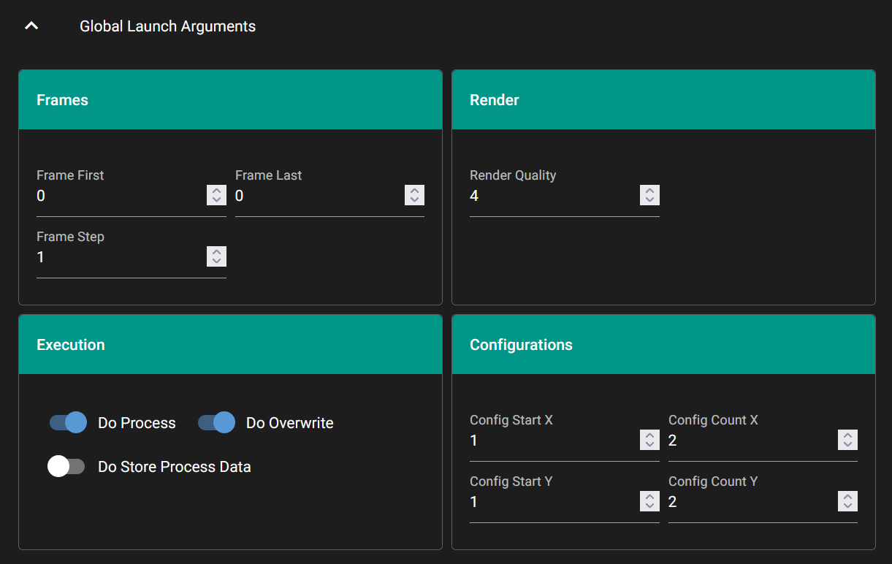

GUI Definition Dictionary#
The GUI can be controlled in more detail using a top-level element mGui in the configuration file, which must be a dictionary. This dictionary must have an element sDTI with the value /catharsys/gui/settings:1.0. All other elements in this dictionary are optional. It can contain the following elements:
Element |
Type |
Description |
|---|---|---|
|
dictionary |
GUI control definitions per variable. |
|
dictionary |
Default values per control type. |
|
bool |
If true (default), all valid configuration elements are shown. |
|
list |
List of configuration elements that are shown. |
|
list |
List of configuration elements that are not shown. |
|
dictionary |
Definition of GUI grid layout. |
Variable GUI Controls#
The mVars dictionary can be used instead of defining [element]/gui dictionaries for each element. In this way, the GUI definitions for all elements can be combined at one place in the configuration file. If the GUI control for an element is defined both in the mVars block and per-element ([element]/gui), the per-element definition takes precedence. For example, that launch file may have this definition:
"mGui": {
"sDTI": "/catharsys/gui/settings:1.0",
"mVars": {
"my_value": {
"sDTI": "/catharsys/gui/control/number/int:1.0",
"sLabel": "My Value",
"sTooltip": "This is my wonderful value",
"iStep": 2,
"iMin": 40,
"iMax": 44,
"sPrefix": "Magic: ",
"sSuffix": "m",
}
}
},
"mGlobalArgs": {
"my_value": 1,
},
Control Defaults#
The mControlDefaults is a dictionary that defines default GUI control settings per control type. The dictionary keys are therefore the control type ids, and the values are dictionaries with control parameters. These definitions overwrite any settings made per element.
Displayed Variables#
If bShowAllVars is true, all elements with the appropriate naming or GUI definition are displayed. The lExcludeVars list can then be used to explicitly exclude elements from the GUI. If bShowAllVars is false, only those elements are shown in the GUI that are listed in the lIncludeVars list.
GUI Grid Layout#
The GUI controls of all enabled configuration elements are displayed in a grid with a fixed number of columns and as many rows as necessary to display all GUI elements. The default is 4 columns. This can be changed per configuration block using the mGridLayout dictionary.
The keys of the mGridLayout dictionary reference the different configuration element blocks:
Id |
Description |
|---|---|
|
Global launch arguments, i.e. elements in |
|
Action specific launch arguments. |
|
Variables defined in |
For each of the above configuration element blocks, different GUI Layouts can be defined. Each layout definition is a dictionary with the following elements:
Element |
Type |
Description |
|---|---|---|
|
int |
Number of variable group columns. Default is 1. |
|
list |
Layout for groups of configuration elements. |
The lGroups element is a list of dictionaries, each with the following elements:
Element |
Type |
Description |
|---|---|---|
|
string |
Title of element group. |
|
list |
List of lists of element names, defining the group block rows. |
For example, if iColumnCount is 2, the groups of variables listed in lGroups are displayed in a two column layout. If there are more than two groups, additional rows of groups are created automatically. Here is an example for the global launch arguments:
"mGui": {
"sDTI": "/catharsys/gui/settings:1.0",
"mGridLayout": {
"actions": {
"iColumnCount": 2,
"lGroups": [
{
"sTitle": "Frames",
"lRows": [
["iFrameFirst", "iFrameLast"],
["iFrameStep"]
]
},
{
"sTitle": "Render",
"lRows": [
["iRenderQuality"]
]
},
{
"sTitle": "Execution",
"lRows": [
["bDoProcess", "bDoOverwrite"],
["bDoStoreProcessData"]
]
},
{
"sTitle": "Configurations",
"lRows": [
["iConfigStartX", "iConfigCountX"],
["iConfigStartY", "iConfigCountY"],
]
}
]
}
}
}
This layout definition generates the following view:
